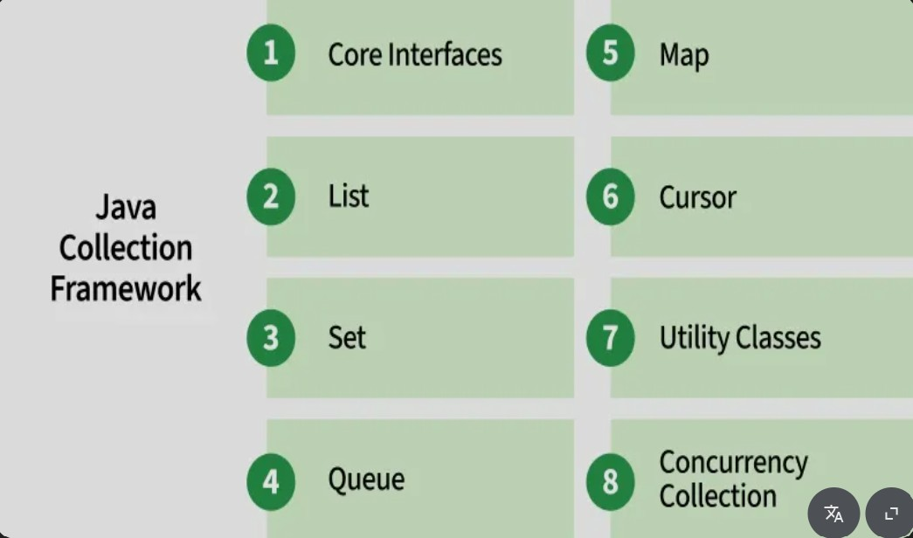

Date: February 10, 2024 | Reading time: 6 min
The Java Collections Framework is a set of classes and interfaces that implement commonly reusable collection data structures. It helps you manage groups of objects efficiently, making your code cleaner, faster, and easier to maintain. Collections are used in almost every Java application—from storing user input to managing complex datasets in enterprise applications.
Each type of collection has a specific use case:
ArrayList, LinkedList.HashSet, TreeSet.HashMap, TreeMap.Select a collection based on your requirements. For example, if you need to maintain insertion order, use a LinkedHashMap or LinkedList. If performance is crucial for lookups, HashMap or HashSet are ideal. Consider both functionality and performance characteristics when deciding which collection to use.
Iterating through collections efficiently is important for performance. Use enhanced for-loops for simplicity, or iterators when you need to safely remove elements during traversal. For large datasets, consider using streams introduced in Java 8, which allow functional-style operations on collections with concise and readable code.
In multi-threaded applications, standard collections can cause concurrency issues. Use thread-safe options like ConcurrentHashMap, CopyOnWriteArrayList, or wrap existing collections with Collections.synchronizedList() to prevent data corruption. Always choose the right collection to ensure both safety and performance.
Java collections simplify real-world tasks: storing and managing users, caching data, handling queues, or processing tasks in order. Knowing when and how to use each type of collection will make your applications more efficient, scalable, and maintainable.